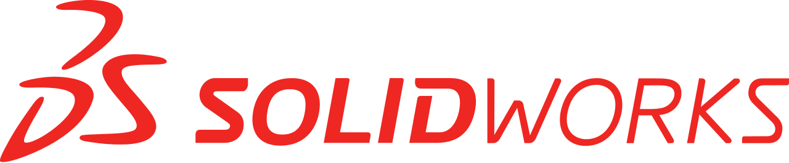
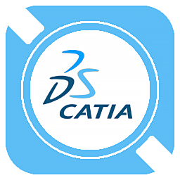
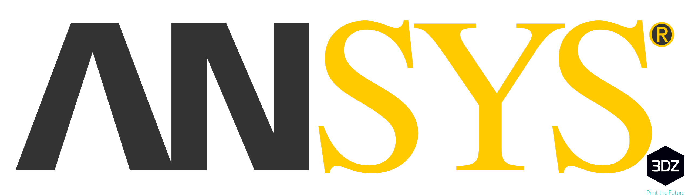
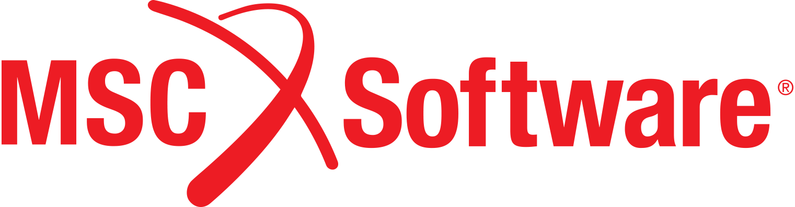
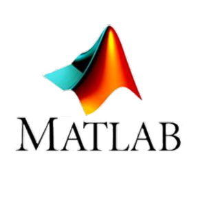

Technical Skills
CAD & Structural Engineering

SolidWorks: Advanced Part Design, Complex Assemblies, and Technical Drafting (GD&T).

Catia V5: Basic Solid Part Modeling.

ANSYS (Workbench, APDL & Granta Selector): Static Structural and Rigid Dynamics simulations; script-based FEA modeling via Mechanical APDL, and advanced material selection.
Vehicle Dynamics & Race Strategy
OptimumLap: Full-circuit energy consumption profiling, dynamic acceleration mapping, and strategic optimization for endurance racing.

MSC ADAMS / Car: Suspension kinematics and multibody dynamics (MBD) analysis.
Programming & Data Science

Python & MATLAB Integration: Developing advanced signal processing and control algorithms. Utilizing Python with a MATLAB kernel for automated, high-efficiency data processing and cross-platform graphical visualization.
 Simulink & Simscape: Model-based systems engineering and EV powertrain simulations.
Simulink & Simscape: Model-based systems engineering and EV powertrain simulations.
Instrumentation & Data Acquisition
Sensor Application & Wiring: Hands-on expertise in precision Strain Gauge (SG) application, including strict surface preparation, bonding, and custom physical wiring for dynamic load measurement.
DAQ System Integration: End-to-end physical integration of data acquisition hardware to vehicle components. Proficient in managing power distribution, sensor connectivity, and hardware-in-the-loop setups.
Data Processing & Interpretation: Extracting raw track telemetry and translating physical signals into actionable engineering insights via advanced signal filtering and data correlation (MATLAB/Python).